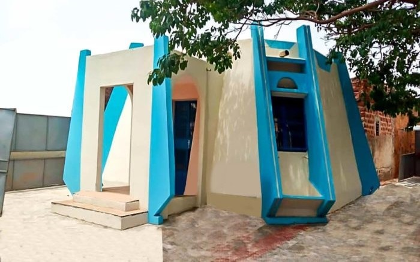

Mausolée de la princesse Guimbi OUATTARA
Historique
Le Mausolée de Guimbi Ouattara est un monument emblématique situé à Bobo-Dioulasso, au Burkina Faso, en l'honneur de Guimbi Ouattara, une figure historique majeure du XIXe siècle. Né vers 1845, Guimbi Ouattara était un chef militaire et un leader politique de la région. Il est surtout connu pour sa résilience et sa lutte contre les forces coloniales françaises qui cherchaient à étendre leur contrôle sur le territoire de l'actuel Burkina Faso.
En 1895, Guimbi Ouattara a mené une série de batailles déterminantes contre les troupes coloniales françaises. Ses actions ont non seulement marqué l'histoire de la résistance locale mais ont également inspiré les générations suivantes. Le mausolée a été construit peu après sa mort en 1896 pour honorer sa mémoire et ses contributions à la défense de l'indépendance de la région.
Le monument a été érigé grâce à la mobilisation des communautés locales et des autorités de l'époque. Il est devenu un symbole de la lutte pour la liberté et la dignité, et continue d'être un lieu de mémoire et de réflexion pour les visiteurs et les chercheurs intéressés par l'histoire coloniale et la résistance en Afrique de l'Ouest.
Au fil des ans, le mausolée a bénéficié de plusieurs campagnes de restauration pour préserver sa structure et son importance historique. Aujourd'hui, il attire non seulement des visiteurs nationaux mais aussi internationaux, qui viennent en apprendre davantage sur l'histoire de la région et rendre hommage à ce héros national.
Description
Le Mausolée de Guimbi Ouattara est un exemple remarquable d'architecture traditionnelle soudano-sahélienne, construit principalement en banco, un matériau local constitué de terre et de paille. Le monument se distingue par ses lignes simples mais élégantes, reflétant la sobriété et la solidité des constructions locales de l'époque.
La structure du mausolée est constituée de murs épais et robustes, conçus pour résister aux conditions climatiques de la région. La toiture en forme de cône est recouverte de matériaux traditionnels, offrant une protection contre les intempéries tout en ajoutant une touche esthétique au bâtiment.
À l'intérieur du mausolée se trouve un tombeau en pierre, dédié à Guimbi Ouattara. Ce tombeau est entouré d'inscriptions en langue locale et en français, qui racontent les réalisations et le rôle de Guimbi Ouattara dans la résistance contre la colonisation. Ces inscriptions servent de témoignage de l'importance historique du leader et de son impact sur la région.
Le mausolée est entouré d'une cour spacieuse, souvent utilisée pour des cérémonies commémoratives et des événements culturels en l'honneur de Guimbi Ouattara. La cour est aménagée avec des éléments décoratifs traditionnels et des espaces de rassemblement, offrant un lieu de rassemblement pour les visiteurs et les membres de la communauté.
Des motifs traditionnels et des sculptures ornementales embellissent le mausolée, reflétant les styles artistiques locaux. Ces décorations ajoutent non seulement à l'aspect visuel du monument mais également à son importance culturelle en tant que symbole de l'héritage et des traditions locales.
Le mausolée continue de jouer un rôle important dans la préservation de la mémoire collective de la région. En tant que site de mémoire, il offre une opportunité aux visiteurs de réfléchir sur l'histoire de la résistance contre la colonisation et d'apprécier l'héritage culturel et historique de Bobo-Dioulasso.